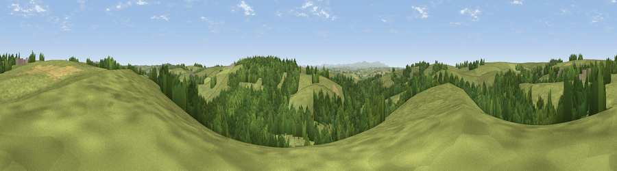

Viewpoint near Morchard Bishop
#32501 in England · top 64% of its area beats it · near Morchard BishopWhere it is
The exact computed spot (SS 75675 10375). Click the marker for map links.
The view, rendered

A 360° render of this exact spot computed from the terrain model, tree cover and land cover — summer colours, afternoon light, calibrated against photographs of famous viewpoints. Real trees, hedges and buildings will differ in detail.
The panorama
Grey silhouette: terrain skyline in each direction (720 bearings, Earth curvature and refraction included). Dashed green: skyline with trees (+15 m) and buildings (+8 m) as obstacles. Blue strip: how far the ground is visible on each bearing.
Where the view opens
Wedge length = distance to the farthest visible ground on that bearing (vegetation-aware). Rings at 10, 25 and 50 km.
What fills the view
69% grassland · 28% woodland · 3% cropland
Angular shares of the visible panorama (visual magnitude), not map area. Landscape diversity 0.32 (0–1 Shannon).
Key numbers
More beautiful places nearby
The staircase of upgrades: each row has a higher view potential than everything closer. Driving times are estimates from straight-line distance, calibrated against real road routing — check an actual route before setting out.
| Place | Direction | Drive | Score |
|---|---|---|---|
| Viewpoint near Lapford | WSW · 2 km | ~6 min | 59.6 |
| Viewpoint near Down St Mary | S · 8 km | ~15 min | 59.8 |
| Serstone Hill | SSW · 8 km | ~16 min | 61.1 |
| Viewpoint near Copplestone | SSE · 8 km | ~16 min | 62.3 |
| Woolsgrove Hill | SSE · 8 km | ~16 min | 64.0 |
| Viewpoint near George Nympton | NNW · 12 km | ~23 min | 65.8 |
| Viewpoint near Venny Tedburn | SSE · 14 km | ~25 min | 70.1 |
| Viewpoint near Stockleigh Pomeroy | ESE · 15 km | ~26 min | 74.7 |
50.87945, -3.76858 · source: screening · position refined by local search. Computed location — check access rights before visiting.